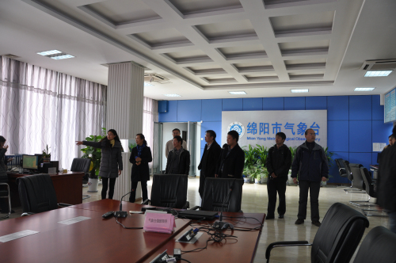

【本网讯】为进一步推动我校与四川气象行业的交流与合作，11月25日，学校党委副书记敬枫蓉一行赴绵阳市气象局进行调研。
敬枫蓉一行在蒲明局长的陪同下参观了气象台、气候中心、气象服务中心和气象探测与数据中心，并详细了解了市级业务平台工作流程以及业务现代化建设情况。双方围绕气象现代化、信息化和智慧气象建设的业务需求和技术支持进行了深入讨论，并就双方今后的合作与交流进行了商谈。
参观结束后， 敬枫蓉一行赴29基地考察空气动力学国家重点实验室。

参观现场
学校科技处、大气探测学院、软件工程学院、信息安全工程学院等单位负责人陪同参加了调研。